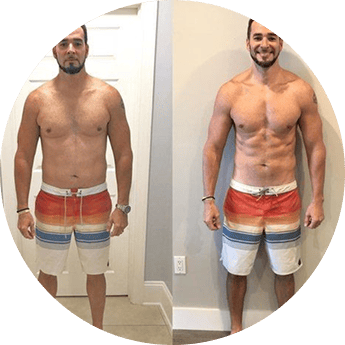
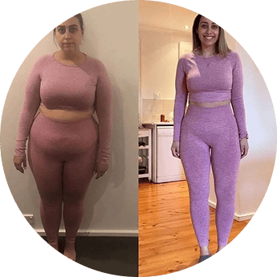

Empoderamos a nuestra comunidad para
alcanzar su mejor versión a través de
entrenamientos efectivos, nutrición
inteligente y herramientas
personalizadas,
elevando el rendimiento
físico y mental con propósito y constancia.
Ser la plataforma líder que transforma
estilo de vida, promoviendo salud, fuerza
y
equilibrio. Aspiramos a inspirar una
cultura donde entrenar, alimentarse bien
y
superar retos diarios sea parte de la
rutina de todos.
Desde un sueño constante y dedicación continua, los fundadores de FitForce se comprometieron con la
excelencia
y un propósito claro: cuidar la salud de nuestros clientes mientras los empoderamos
a superarse cada día. Tras
años perfeccionando entrenamientos, recetas y creando una comunidad
sólida, convertimos esa visión en un
lugar seguro que prioriza el bienestar físico y mental por
encima de todo. Hoy somos mucho más que una
plataforma: somos un movimiento donde cada logro
compartido, br cada meta alcanzada y cada paso hacia una
vida más saludable fortalecen nuestra
convicción de que alcanzar la excelencia es también proteger y potenciar
la salud de quienes
confían en nosotros.
Las Mejores Rutinas
En nuestro centro combinamos lo mejor de dos mundos: las rutinas de gimnasio que
refuerzan tu fortaleza muscular, mejoran la resistencia y moldean el cuerpo, junto con
dinámicos entrenamientos de CrossFit basados en movimientos funcionales de alta
intensidad (WODs), adaptables a todos los niveles.
Cada sesión, ya sea de fuerza con pesas, ejercicios cardiovasculares o
circuitos CrossFit,
está diseñada para ayudarte a superar tus límites de forma segura y
efectiva, con
técnicas que mejoran la movilidad, potencia y salud integral.
Blog
Nutrición-Recuperación-Motivación
¡Bienvenido al blog de FitForce. Aquí, donde la fortaleza se forja con
cada entrenamiento y la fuerza se alimenta de disciplina y pasión, encontrarás
inspiración para potenciar tu bienestar físico y mental. En este espacio, exploraremos temas
esenciales como la nutrición adecuada, estrategias de recuperación eficaces y fuentes de
motivación que te impulsarán a superar tus límites. Creemos que cada persona posee una
fibra interior capaz de resistir y crecer ante los desafíos.
Nuestra
misión es ayudarte a descubrir y fortalecer esa fibra ,
proporcionándote herramientas y conocimientos que te permitan lcanzar tus objetivos de forma
sostenible y saludable.
A través de artículos detallados, consejos prácticos y
testimonios inspiradores, te acompañaremos en tu camino hacia una vida más activa y equilibrada.
Ya sea que estés comenzando tu viaje fitness o buscando llevar tu rendimiento al
siguiente nivel, en FitForce encontrarás el apoyo y la información que necesitas
para avanzar con confianza y determinación.¡Prepárate para transformar tu vida y liberar todo tu
potencial con FitForce!
Nutrición
La nutrición es la fundación que otorga la fuerza y el foco necesarios para alcanzar alto rendimiento. Una dieta balanceada, rica en fibra, proteínas magras y carbohidratos complejos alimenta tus entrenamientos, mientras las grasas saludables apoyan la función hormonal y la resistencia.Además, mantenerte bien hidratado es fundamental: incluso un 2% de deshidratación puede afectar negativamente tu energía, recuperación y concentración. Integrar estos elementos en tu alimentación diaria optimiza la recuperación, potencia la formación de músculo y afina tu foco mental para superar cada desafío con decisión

Nutrición
La nutrición es la fundación que otorga la fuerza y el foco necesarios para alcanzar alto rendimiento. Una dieta balanceada, rica en fibra, proteínas magras y carbohidratos complejos alimenta tus entrenamientos, mientras las grasas saludables apoyan la función hormonal y la resistencia.Además, mantenerte bien hidratado es fundamental: incluso un 2% de deshidratación puede afectar negativamente tu energía, recuperación y concentración. Integrar estos elementos en tu alimentación diaria optimiza la recuperación, potencia la formación de músculo y afina tu foco mental para superar cada desafío con decisión
Para ti, que sueñas con crecer y mejorar en todos los ámbitos de tu vida, te compartimos esta guía nutricional práctica. Porque tu bienestar es el primer paso hacia tus metas, no lo dudes más y comienza hoy mismo tu camino hacia una vida plena y llena de energía. ¡Tú puedes lograrlo!
Descargar plan de nutriciónRecuperación
Después de entrenamientos intensos y prolongados, la recuperación es esencial para
reconstruir y fortalecer tu cuerpo. Primero, prioriza un freno adecuado: el sueño profundo
(7-9 h por noche) permite la secreción de hormonas de crecimiento que reparan fibras
musculares desgarradas durante el esfuerzo. Complementariamente, una dieta post‑workout que
combine proteínas y carbohidratos en proporción 2:1 potencia la reposición de glucógeno y la
síntesis proteica mientras una correcta hidratación con electrolitos ayuda a eliminar
desechos metabólicos y disminuir la inflamación . Además, incorporar recuperación activa,
como
estiramientos, foam‑rolling o una caminata suave favorece la circulación y reduce
la rigidez.Técnicas complementarias como baños fríos, saunas o compresión pueden acelerar la
reparación y aliviar el dolor muscular. Finalmente, escucha a tu cuerpo: si aparece fatiga
excesiva o dolor persistente, considera una pausa total o una semana de descarga para evitar
el sobreentrenamiento.
Descanso Reparador
Nutrición Balanceada
Estiramientos Diarios
Motivación
Motivación es la fuerza interior que enciende el fuego de tus entrenamientos y te impulsa a superar cada fase de fatiga. Para mantenerla viva, define metas SMART: específicas, medibles, alcanzables, relevantes y temporales, y regálate un reconocimiento por cada logro porque cada victoria alimenta tu foco y tu compromiso. Rodéate de una familia fitness: entrenar en comunidad o con un compañero genera energía colectiva y refuerza tu intención. Y cuando la chispa decaiga, recuerda tu “por qué”: conectar con tu propósito o visión personal genera una fidelidad mental que te sostiene más allá de las ganas
Recomendaciones
Película-Rocky, protagonizada por Sylvester Stallone
Esta icónica película protagonizada por Sylvester Stallone narra la historia de Rocky Balboa, un boxeador de clase baja que recibe una oportunidad única para pelear por el título mundial. Más allá de la trama deportiva, Rocky es un testimonio de resiliencia, disciplina y la importancia de nunca rendirse, incluso cuando las probabilidades están en contra. Su mensaje resuena con la idea de superar desafíos personales y mantener la motivación viva, tal como mencionas en tu texto.
Libro-INVICTO, de Marcos Vázquez
Marcos Vázquez, creador del proyecto Fitness Revolucionario, presenta en Invicto una fusión entre filosofía estoica y psicología moderna, enfocada en entrenar la mente para mejorar la vida. El libro aborda cómo la calidad de nuestros pensamientos influye directamente en nuestra disciplina, resiliencia y capacidad para mantenernos enfocados en nuestros objetivos. Es una lectura ideal para quienes buscan fortalecer su mentalidad y aplicar principios de superación personal en su día a día
Daniela
Llegué a CrossFit Fit Force sin saber levantar ni una pesa, cansada y sin motivación. Los entrenamientos intensos combinados con el apoyo constante de los coach me hicieron superarme. En seis meses gané fuerza, empecé a correr sin parar y bajé 8 kg sin hacer dietas extremas. Ahora tengo energía para jugar con mis hijos, duermo profundo y me siento orgullosa de mi cuerpo. Fit Force me enseñó que no solo es un gimnasio… es una comunidad.

Andrés
Tras años sin hacer ejercicio y con dolores frecuentes, llegué a CrossFit Fit Force por recomendación. Empecé con caminatas y circuitos de fuerza los lunes, miércoles y viernes. En cinco meses bajé 15 kg, mi presión se normalizó y los dolores de espalda desaparecieron. Lo mejor: me siento mentalmente más fuerte, con disciplina y seguridad. Además, he contagiado a mi esposa y a mis hijos a entrenar conmigo.

Catalina
Decidí unirme al gym Fit Force buscando cambiar mi rutina sedentaria. Me enganché con las sesiones de gym tradicional y crossfit los fines de semana. Gracias a su combinación de pesas y alta intensidad aprendí a alimentarme mejor, mejoré mi postura y mi autoestima. En 4 meses he ganado tono muscular, disminuí mi estrés y duermo mejor. Me encanta que aquí cada persona se escala a su ritmo, sin presiones.